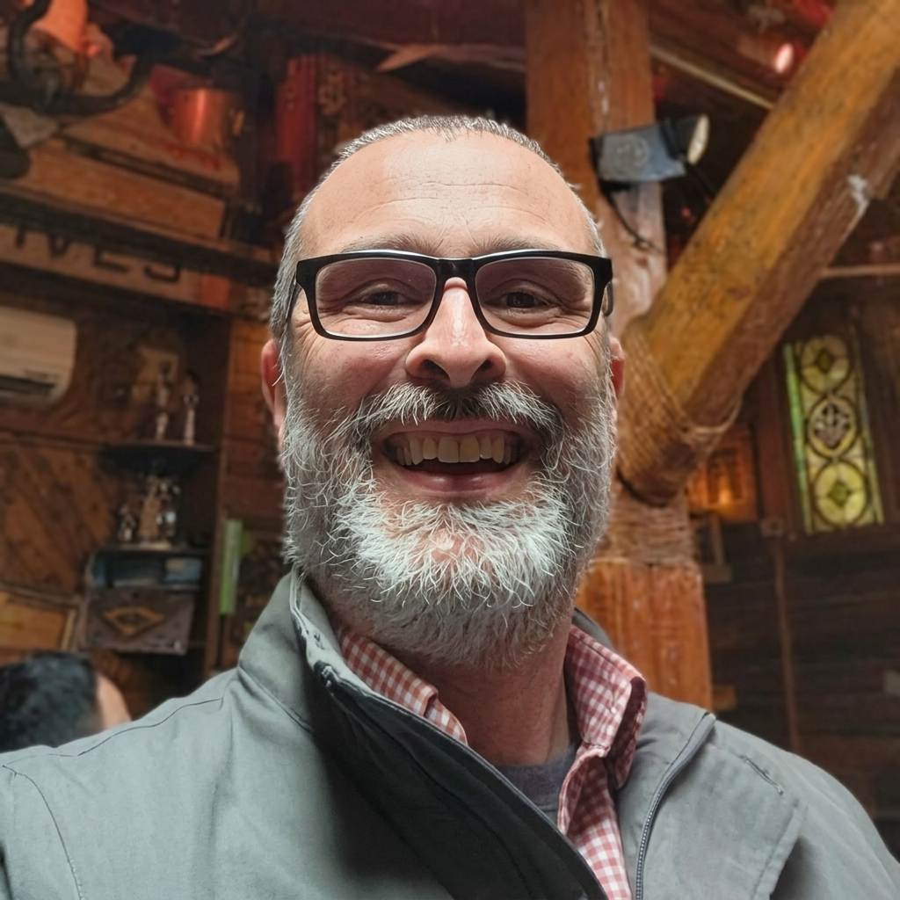

José Marichal
Professor of Political Science
California Lutheran University
"I specialize in studying the role that algorithms and AI play in restructuring social and political institutions. My work explores the unwritten social contract we have with the computational systems that shape our reality."
Author of "You Must Become an Algorithmic Problem" (Bristol University Press, 2025). My next project, "Machine Liberalism", looks at how algorithms and AI are changing our expectations of liberal democracy (forthcoming 2027).
Research Trajectory & Themes
Machine Liberalism
Intellect Books / University of Chicago Press. Exploring AI's impact on expectations of liberal democracy.
You Must Become an Algorithmic Problem
Bristol University Press. The social contract of algorithms.
Machine Learning & Civic Life
Developing interactive dashboards and AI coding experiments for civic pedagogy.